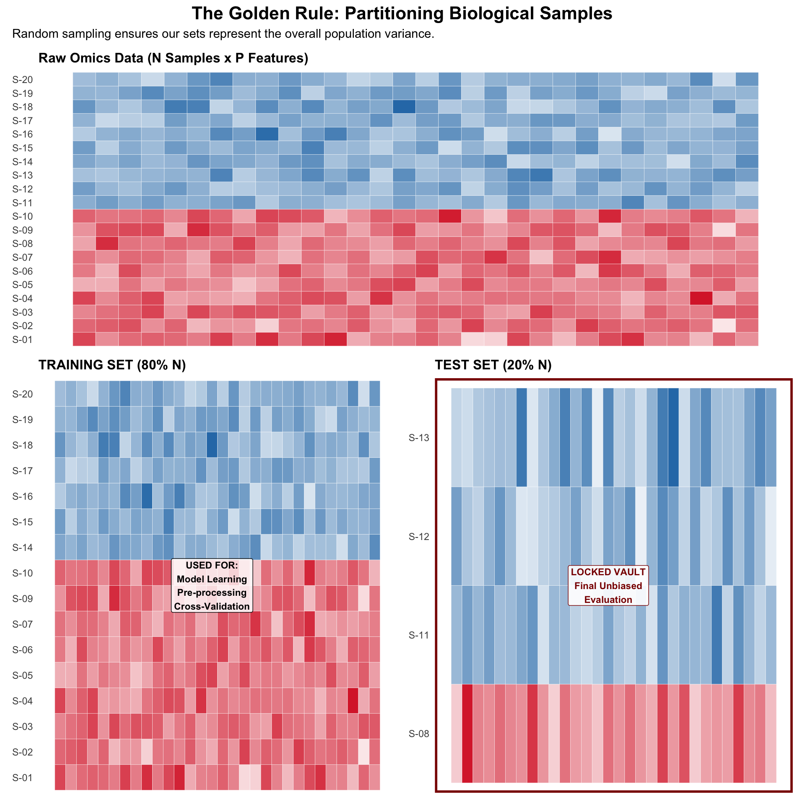
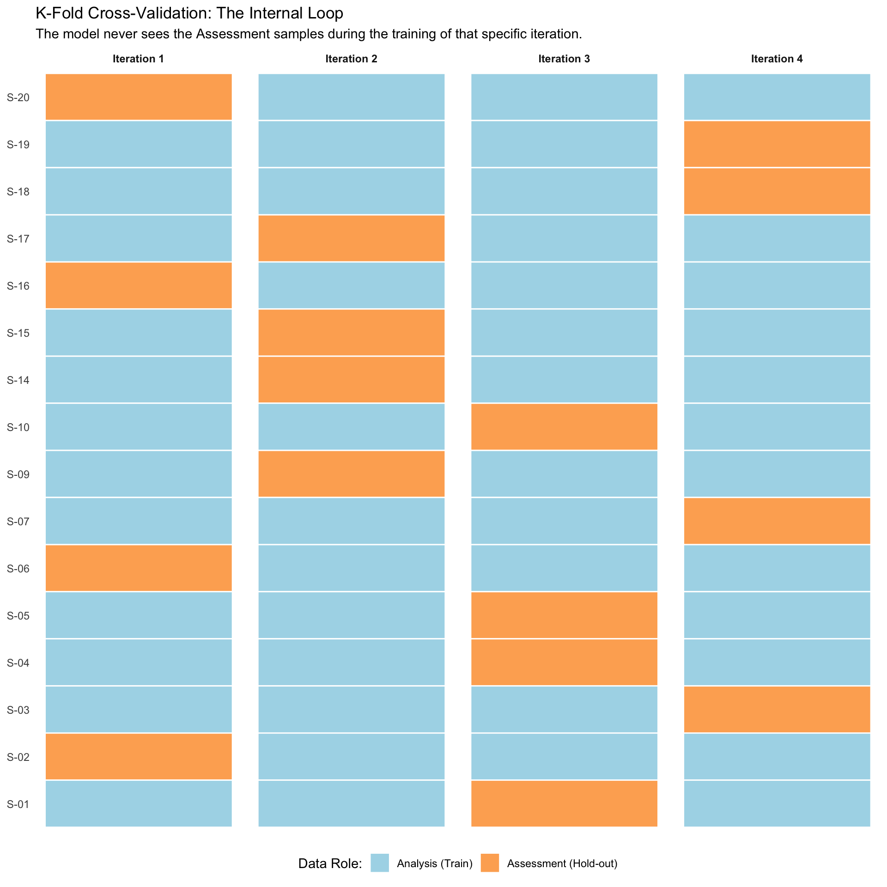
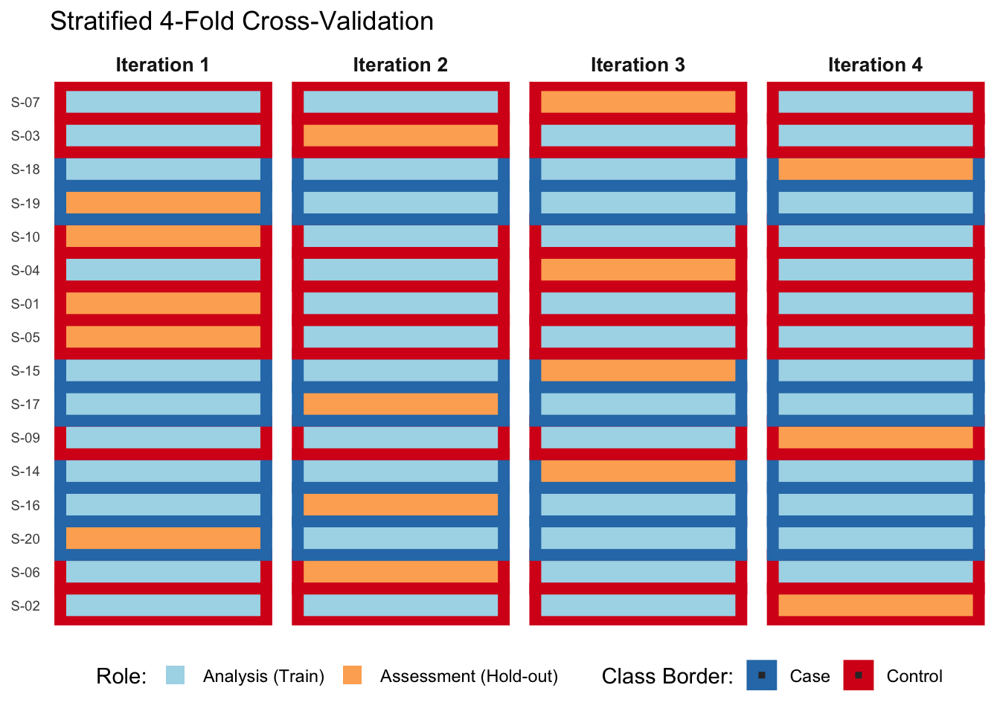

2The Core Workflow of ML & Biological Pre-processing
In the transition from classical biostatistics to Machine Learning, the most critical shift is moving from explaining the past to predicting the future.
This means that, unlike traditional hypothesis testing where we focus on \(p\)-values and confidence intervals, in ML we prioritize out-of-sample performance, or well can we generalize to new, unseen data.
While a \(p\)-value tells us how unlikely a result is under the null hypothesis, an ML model’s utility is measured by its Generalization Error: how well it performs on a sample it has never seen before.
2.1 The ML Workflow Overview
A robust ML pipeline for biological data follows these non-negotiable steps:
Data Cleaning: Handling NAs and filtering low-variance features (e.g., genes with near-zero counts).
Data Spending: Splitting the data into training and testing sets to prevent data leakage.
Biological Pre-processing: Normalizing, filtering, and transforming biological data
Model Training: Fitting the algorithm to the training data.
Evaluation: Testing the “unseen” data to see if the model actually learned biology or just memorized noise.
For our course, we will use the TCGA Cholangiocarcinoma (CHOL) cohort. We will use the {TCGAbiolinks} package to download and prepare the data.
# Prepare our Data for Machine Learning with # TCGA Cholangiocarcinoma (CHOL) Cohortlibrary(TCGAbiolinks)library(SummarizedExperiment)library(tidyverse)# 1. Query only the Cholangiocarcinoma cohortquery_chol <-GDCquery(project ="TCGA-CHOL",data.category ="Transcriptome Profiling",data.type ="Gene Expression Quantification",workflow.type ="STAR - Counts")# Load the data into a SummarizedExperiment objectchol_se <-GDCprepare(query_chol)
| | 0%
|= |2.272727% ~2 s remaining
|== |4.545455% ~2 s remaining
|=== |6.818182% ~2 s remaining
|==== |9.090909% ~2 s remaining
|===== |11.36364% ~2 s remaining
|======= |13.63636% ~1 s remaining
|======== |15.90909% ~1 s remaining
|========= |18.18182% ~3 s remaining
|========== |20.45455% ~2 s remaining
|=========== |22.72727% ~2 s remaining
|============= | 25% ~2 s remaining
|============== |27.27273% ~2 s remaining
|=============== |29.54545% ~2 s remaining
|================ |31.81818% ~2 s remaining
|================= |34.09091% ~2 s remaining
|================== |36.36364% ~2 s remaining
|==================== |38.63636% ~1 s remaining
|===================== |40.90909% ~2 s remaining
|====================== |43.18182% ~2 s remaining
|======================= |45.45455% ~2 s remaining
|======================== |47.72727% ~1 s remaining
|========================== | 50% ~1 s remaining
|=========================== |52.27273% ~1 s remaining
|============================ |54.54545% ~1 s remaining
|============================= |56.81818% ~1 s remaining
|============================== |59.09091% ~1 s remaining
|=============================== |61.36364% ~1 s remaining
|================================= |63.63636% ~1 s remaining
|================================== |65.90909% ~1 s remaining
|=================================== |68.18182% ~1 s remaining
|==================================== |70.45455% ~1 s remaining
|===================================== |72.72727% ~1 s remaining
|======================================= | 75% ~1 s remaining
|======================================== |77.27273% ~1 s remaining
|========================================= |79.54545% ~1 s remaining
|========================================== |81.81818% ~0 s remaining
|=========================================== |84.09091% ~0 s remaining
|============================================ |86.36364% ~0 s remaining
|============================================== |88.63636% ~0 s remaining
|=============================================== |90.90909% ~0 s remaining
|================================================ |93.18182% ~0 s remaining
|================================================= |95.45455% ~0 s remaining
|================================================== |97.72727% ~0 s remaining
|====================================================|100% ~0 s remaining
|====================================================|100% Completed after 2 s
# 2. Download and prepare the data# Extract TPM using tpm_data <-assay(chol_se, "tpm_unstrand")# 3. Quick Metadata Linkmetadata <-as.data.frame(colData(chol_se)) %>%select(barcode, sample_type)head(metadata)
# 4. ML Preparation (Transpose)# Often in ML, TPM or FPKM values are used directly# We need the samples as rows and genes as columns# We filter for low-expression genes to remove noise# For TPM, a common threshold is > 0.1 or > 1 in a certain % of sampleskeep <-rowSums(tpm_data >1) >=5tpm_filtered <- tpm_data[keep, ]dim(tpm_filtered) # Check dimensions after filtering
[1] 22215 44
head(tpm_filtered[, 1:5]) # View first 5 samples for first few genes
## Combine with metadatadf_ml_tpm <-as.data.frame(t(tpm_filtered)) %>%rownames_to_column("barcode") %>%inner_join(metadata, by ="barcode") %>%select(-barcode) %>%mutate(sample_type =factor(sample_type))dim(df_ml_tpm) # Check final dimensions
[1] 44 22216
2.2 The Spending Plan: Data Splitting Strategies
In biology, samples are precious and often limited (\(n < 100\)). This scarcity makes the “Data Spending” phase the most high-stakes part of your project. If you use your data too aggressively during training, you will overfit; if you save too much for testing, your model will be too weak to learn the underlying biology. Finally, if you “peek” at the test set during pre-processing, you will introduce Data Leakage1, leading to overly optimistic performance estimates.
2.2.1 The Initial Split: Training vs. Testing
To ensure that our model’s performance is a true reflection of its ability to generalize, we must carefully partition our dataset at the very beginning of our analysis. For that, we divide our dataset into two primary components (Figure 2.1):
The Training Set: This subset is used to train the model. All pre-processing steps (normalization, feature selection, imputation) must be derived solely from this set. Often, we use 70% to 80% of the data for training.
The Test Set: This subset is held out and only used once at the very end to evaluate the model’s performance. It must remain completely unseen during training and pre-processing.
Note: Never perform normalization, feature selection, or imputation on the entire dataset before splitting. If you calculate the mean expression of a gene using all samples, the training set now “knows” something about the distribution of the test set. This is Data Leakage, and it leads to artificially inflated (and ultimately false) performance metrics.

Figure 2.1: Data Spending: Training vs. Testing Sets
The easiest way to implement this split in R is using the initial_split() function from the {rsample} package, which is part of the tidymodels ecosystem.
# Split the data into training and testing setslibrary(tidymodels)set.seed(42) # For reproducibilitydata_split <-initial_split(df_ml_tpm, prop =0.75)train_data_chol <-training(data_split)test_data_chol <-testing(data_split)cat("Training samples:", nrow(train_data_chol), "\nTesting samples:", nrow(test_data_chol))
Training samples: 33
Testing samples: 11
cat("Proportion of sample types in training set:\n")
Primary Tumor Solid Tissue Normal
0.8181818 0.1818182
2.2.2 Stratified Sampling
In several biological contexts, the classes we are trying to predict are imbalanced, which can lead to misleading performance metrics if not handled properly. Menaing that one class (e.g., healthy controls) may vastly outnumber another (e.g., patients with a rare disease). If we randomly split the data, we risk creating training and testing sets that do not accurately represent the overall class distribution. This can lead to models that perform well on the majority class but poorly on the minority class, which is often of greater interest in biological studies.
To address this, we use Stratified Sampling to ensure that the proportion of the outcome (e.g., disease status) is preserved in both the training and testing sets.
In R, we will use the same function as before, but with a new argument.
# Split the data into training and testing setslibrary(tidymodels)set.seed(42) # For reproducibilitydata_split <-initial_split(df_ml_tpm, prop =0.75, strata = sample_type)train_data_chol <-training(data_split)test_data_chol <-testing(data_split)cat("Training samples:", nrow(train_data_chol), "\nTesting samples:", nrow(test_data_chol))
Training samples: 32
Testing samples: 12
cat("Proportion of sample types in training set:\n")
Biological data is rarely “model-ready.” We must address two major issues: Scale and Skewness.
2.3.1 Scaling and Centering
Most ML algorithms (like SVM or Lasso) use distance-based metrics. If Gene A has expression values in the thousands and Gene B in the decimals, the model will unfairly prioritize Gene A.
2.3.2 Near-Zero Variance (NZV)
In RNA-seq, many genes show little to no variation across samples. These are “noise” for a predictive model and increase the “Curse of Dimensionality.”
2.3.3 The recipe Approach
In {tidymodels}, we define a “recipe” – a blueprint of transformations.
library(tidymodels)# Define a recipe for pre-processing# We will scale, center, and remove near-zero variance predictorsml_recipe <-recipe(sample_type ~ ., data = train_data_chol) %>%step_zv(all_predictors()) %>%# Remove zero variance predictorsstep_nzv(all_predictors()) %>%# Remove near-zero variance predictorsstep_normalize(all_predictors()) %>%# Scale and center predictors step_corr(all_predictors(), threshold =0.9) # Remove highly correlated predictors# View the recipeml_recipe# Prepare the recipe# This estimates the required parameters from the training dataml_prep <-prep(ml_recipe, training = train_data_chol)# Apply the pre-processing to training and testing datatrain_processed <-bake(ml_prep, new_data = train_data_chol)test_processed <-bake(ml_prep, new_data = test_data_chol)# Check dimensions after pre-processing# Near-zero variance predictors should be removeddim(train_processed)
[1] 32 15146
dim(test_processed)
[1] 12 15146
With our data now properly split and pre-processed, we still have an issue: our training set is small. To build a robust model, we need to maximize the utility of our training data without overfitting. This is where Cross-Validation comes into play.
2.4 Cross-Validation: Maximizing Training Data Utility
Cross-Validation (CV) is a resampling technique used to evaluate ML models on a limited data sample. The most common form is k-Fold Cross-Validation. In k-Fold CV, the training data is divided into k subsets (or “folds”). The model is trained on k-1 folds and validated on the remaining fold. This process is repeated k times, with each fold serving as the validation set once (Figure 2.2). The final performance metric is averaged across all folds.
Term
Definition
Fold
A subset of the training data.
Resampling
Repeating the split process.
Hyperparameter
Settings of the model (not learned from data).

Figure 2.2: K-Fold Cross-Validation: The Internal Loop
To implement k-Fold CV in R, we use the vfold_cv() function from {rsample}.
# Create stratified 5-fold cross-validationset.seed(123)cv_folds <-vfold_cv(train_data_chol, v =5)cv_folds
As we have discussed in Section Section 2.2, biological datasets are often imbalanced. If we use standard K-Fold CV, we risk an iteration where the “Assessment” fold accidentally contains zero cases of a specific disease subtype. Stratified K-Fold ensures that each internal fold preserves the same ratio of classes as the original training set (Figure 2.3).

Figure 2.3: Stratified K-Fold Cross-Validation
In R, implementing this is as simple as adding the strata argument to your resampling function:
In this Chapter, we have established the “infrastructure” of a machine learning project. We moved beyond simple data loading to a rigorous pipeline that respects biological complexity and statistical integrity.
2.5.1 Key Takeaways
The Mindset Shift: We moved from \(p\)-values (inference) to Generalization Error (prediction).
Data Spending: We learned that the Test Set is a “Locked Vault” that must remain untouched until the very end to prevent Data Leakage.
Feature Engineering: Using {tidymodels} recipes, we automated the removal of Near-Zero Variance (NZV) genes and normalized high-throughput counts to prevent feature scale bias.
Validation: We implemented Cross-Validation to maximize our small biological sample size (\(n\)) while maintaining a “mock” testing environment.
2.5.2 Final Remarks
You now have a “processed” dataset (train_processed) and a validation strategy (cv_folds). However, we haven’t actually looked at our data yet. In the next chapter, we will explore Unsupervised Learning. We will use Dimensionality Reduction (PCA, tSNE, UMAP) to see if our biological groups (Cases vs. Controls) naturally separate before we ever try to “force” a model to learn them.
Data Leakage occurs when information from outside the training dataset is used to create the model. This can lead to overly optimistic performance estimates because the model has effectively “seen” parts of the test data during training.↩︎